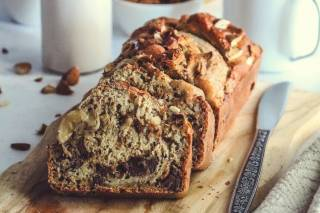

Banana bread - Pain/cake à la banane
Ingrédients
- 300 g de farine
- 150 g de beurre à température ambiante
- 150 g de sucre roux
- 2 oeufs
- 3 bananes mûres
- 15 cl de lait
- 1 sachet de levure chimique
- 1 cuillère à café de bicarbonate de soude alimentaire
- 150 g de chocolat
- 1 pincée de sel
Temps de préparation
Cuisson : 1h à 160°C
Étapes
- Dans un saladier, mélanger au batteur électrique le sucre et le beurre en morceaux.
- Ajouter les œufs un à un tout en fouettant.
- Ajouter le lait et mélangez.
- Ajouter petit à petit la farine tamisée, la levure chimique, le bicarbonate et le sel tout en mélangeant jusqu'à l'obtention d'une pâte homogène.
- Mettre le cake à cuire dans un four préchauffé à 180°C pendant 40 min.
- Hacher grossièrement le chocolat.
- Peler les bananes puis écraser la chair à la fourchette afin de la réduire en purée.
- Ajouter le chocolat et la purée de bananes à la pâte.
- Mélanger.
- Beurrer et fariner un moule à cake.
- Verser la pâte dans le moule.
- Enfourner pour 1h à 160°C.
- Vérifier la cuisson en plantant la lame d'un couteau dans le cake. (Elle doit ressortir sèche ?)
- Laisser légèrement refroidir avant de démouler.
Astuce déco : ajoutez quelques pétales de fleurs séchées ou des graines de pavot pour un effet visuel et une petite touche originale.